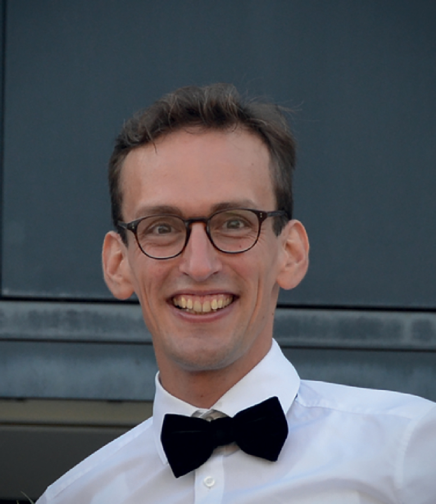
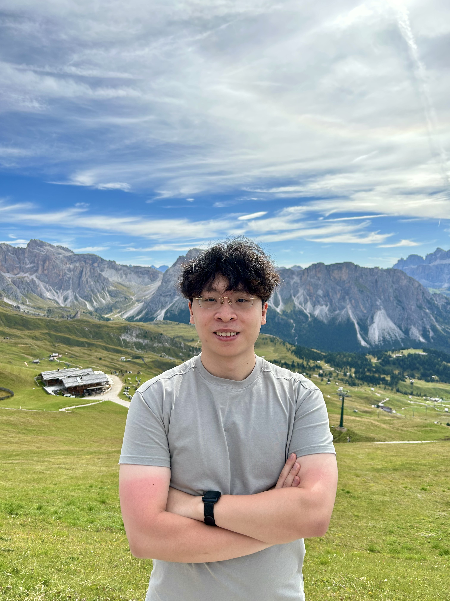
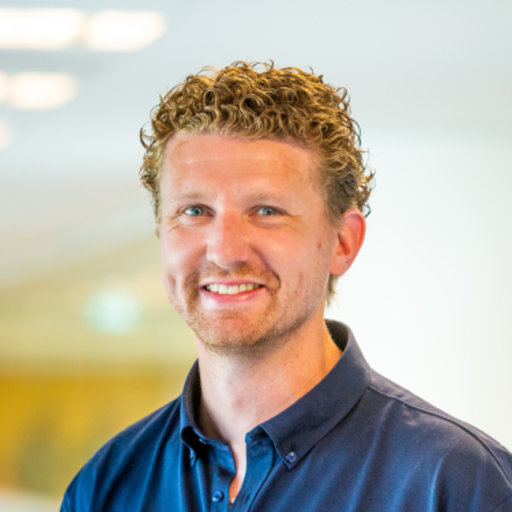
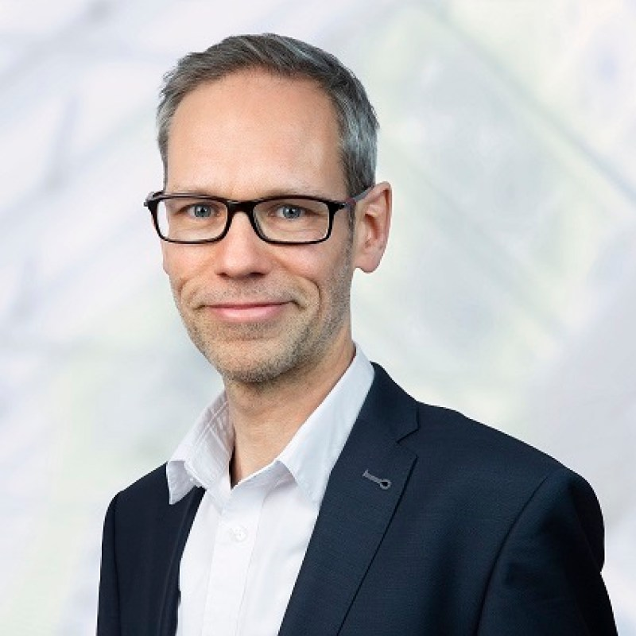

Overview
Foundation models, large-scale pre-trained systems that generalize across tasks and modalities, are rapidly reshaping clinical AI. This session examines their role in clinical decision making through three lenses: representation (learning from multimodal clinical data such as EHR, imaging, genomics, and text), clinical reasoning (supporting diagnosis and treatment planning), and interaction (designing and evaluating conversational systems for real clinical workflows). Beyond showcasing state-of-the-art work, the session aims to build a durable research community around responsible, high-impact clinical AI.
The topic bridges core BNAIC themes: representation learning, multi-agent systems, knowledge discovery, reasoning, and human-AI interaction, with a domain of immediate societal urgency, aligning directly with BNAIC's dual mandate of scientific excellence and real-world impact.
The session is designed for the full breadth of the BNAIC community: PIs, postdocs, PhD candidates and master's students; clinical practitioners and health informaticians; policymakers; and interdisciplinary researchers. No prior expertise in foundation models is assumed.
Call for Papers
We invite submissions to FOMO4CDM, a focused session at BNAIC/BeNeLearn 2026 (21–23 October 2026, Maastricht, the Netherlands) bringing together researchers and practitioners working at the intersection of foundation models, machine learning, and healthcare.
Topics of interest include, but are not limited to:
- Representation: foundation models and representation learning from heterogeneous clinical data, including electronic health records, medical imaging, genomics, clinical text, and multimodal data.
- Clinical reasoning: foundation models for diagnosis, prognosis, clinical decision support, treatment planning, and related reasoning tasks.
- Interaction: conversational and interactive AI, human-AI collaboration, and the integration of foundation models into clinical workflows.
- Adaptation & evaluation: fine-tuning, adaptation, benchmarking, interpretability, and robustness of foundation models in clinical settings.
- Responsible AI: fairness, privacy, safety, and regulatory considerations for clinical foundation models.
- Deployment: real-world clinical integration, workflow studies, and lessons learned from putting these systems into practice.
The session will feature invited keynote talks, contributed research presentations, and an interactive panel discussion. We welcome contributions from artificial intelligence, machine learning, clinical informatics, medical imaging, genomics, natural language processing, clinical decision support, and related fields.
Submission & Registration
Submission
We invite short two-page extended abstracts (excluding references) describing ongoing or completed work relevant to the session topics. No specific formatting template is required.
Submissions are handled via a short Google Form. Accepted abstracts will be invited to present during the FOMO4CDM session.
- Extended abstract submission deadline: 20 September 2026
- BNAIC 2026 conference: 21-23 October 2026
Registration
FOMO4CDM is organized as part of BNAIC 2026. Authors with accepted papers register for the session as part of their BNAIC 2026 conference registration.
See the BNAIC 2026 registration page for available options and rates.
Agenda
Exact clock times will be announced closer to the conference; durations below are indicative.
| Duration | Session | Details |
|---|---|---|
| 5 min | Welcome & Opening Remarks | |
| 30 min (incl. Q&A) | Invited Keynote Talk 1 | Maarten De Vos — see Keynotes and Panelists |
| 30 min (incl. Q&A) | Invited Keynote Talk 2 | Speaker to be announced — see Keynotes and Panelists |
| 60 min | Short Research Presentations | Community-contributed 10-minute talks on: (i) representation learning from multimodal clinical data; (ii) clinical reasoning and AI-assisted decision support; (iii) conversational and interactive AI for healthcare. Submitted via the Google Form. |
| 30 min | Interactive Panel Discussion | Cross-cutting themes including trustworthiness, regulatory considerations, and clinical adoption, combined with open-floor audience engagement, networking, and community roadmap scoping, see below |
| 5 min | Closing Remarks |
Keynotes and Panelists

Maarten De Vos
Associate Professor, KU Leuven
Maarten De Vos is an associate professo at KU Leuven who specialises in artificial intelligence, biomedical engineering, and healthcare technology. His research focuses on using AI, machine learning, and wearable sensors to monitor human health and detect medical conditions. He has worked on technologies that allow brain and body activity to be monitored outside traditional hospital or laboratory environments. Before joining KU Leuven, he also held academic positions at the University of Oxford and the University of Oldenburg.
To be announced
Invited Keynote Speaker
Session Organizers
Majid Lotfian Delouee
Postdoctoral Researcher, Amsterdam UMC
Andrea Rafanelli
Postdoctoral Researcher, Amsterdam UMC

Joe C. Song
Msc Student
Universiteit van Amsterdam

Sjors in 't Veld
Postdoctoral Researcher, Amsterdam UMC

Martijn Schut
Professor
Amsterdam UMC
Venue
The session is co-located with BNAIC 2026, the Belgium-Netherlands Conference on Artificial Intelligence, held at the Department of Advanced Computing Sciences, Maastricht University.
Venue Details on BNAIC 2026 Website